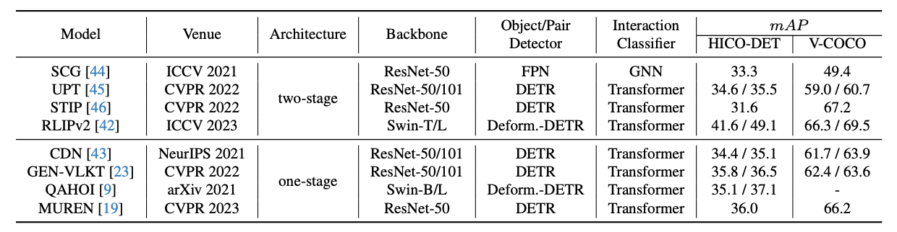
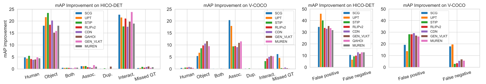
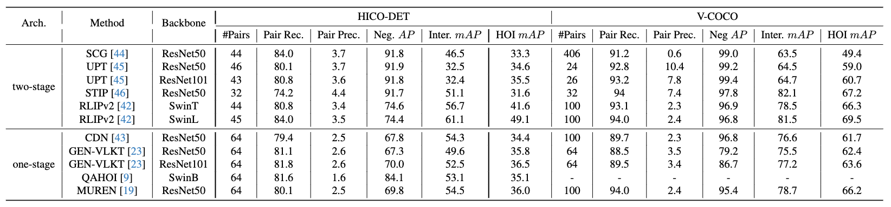
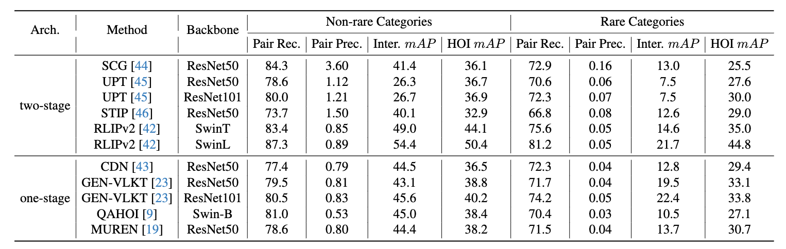
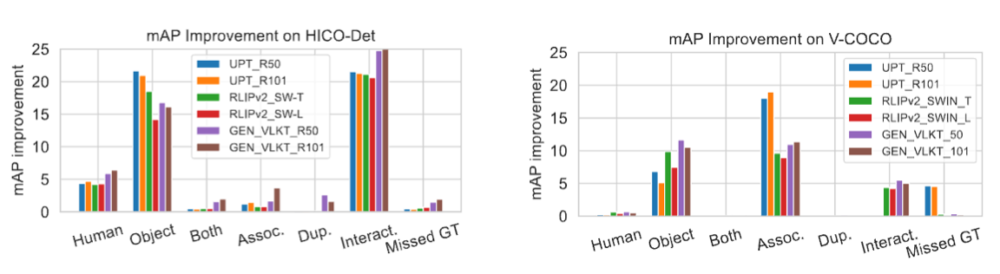

We have witnessed significant progress in human-object interaction (HOI) detection. The reliance on mAP (mean Average Precision) scores as a summary metric, however, does not provide sufficient insight into the nuances of model performance (\eg, why one model is better than another), which can hinder further innovation in this field. To address this issue, in this paper, we introduce a diagnosis toolbox to provide a detailed quantitative breakdown analysis of HOI detection models, inspired by the success of object detection diagnosis toolboxes. We first conduct holistic investigations in the pipeline of HOI detection. By defining a set of errors and the oracles to fix each of them, we can have a quantitative analysis of the significance of different errors according to the $mAP$ improvement obtained from fixing each error. We then delve into two sub-tasks of HOI detection: human-object pair detection and interaction classification, respectively. For the first detection task, we compute the coverage of ground-truth human-object pairs as well as the noisiness level in the detection results. For the second classification task, we measure a model's performance of differentiating positive and negative detection results and also classify the actual interactions when the human-object pairs are correctly detected. We analyze eight state-of-the-art HOI detection models and provide valuable diagnosis insights to foster future research. For instance, our diagnosis shows that the state-of-the-art model RLIPv2 outperforms others mainly because it significantly improves the multi-label interaction classification accuracy.
Inspired by the object detection diagnosis toolbox TIDE, we define a set of error types (Fig. 1) as well as oracles (Fig. 2) to fix them in the HOI detection pipeline across the human-object pair detection and interaction classification tasks. The mAP improvement, obtained by applying the oracle to each error, is used to measure the significance of different errors. The larger mAP improvement can be obtained for a particular type of error, the more it contributes to the failure of an HOI detector. We then delve into the human-object pair detection and interaction classification tasks, respectively, and conduct detailed studies on eight HOI detection models, shown in Tab. 1.
We then delve into the human-object pair detection and interaction classification tasks, respectively, and conduct detailed studies on eight HOI detection models, shown in Tab. 1.
The mAP improvement for the seven types of errors as well as FPs and FNs on both HICO-DET and V-COCO are shown in Fig. 3 and 4. For both one-stage and two-stage approaches, most of the errors are from two sources: incorrect localization of the object in a human-object pair and incorrect interaction classification even if the localization is correct.
Generally, two-stage approaches tend to have higher precision for the human-object pair detection task, meaning less noise in the detection. The recall is roughly the same as one-stage detector. However, none of the two-stage nor one-stage approaches' recall value is high enough on the challenging HICO-DET benchmark. It shows that the human-object pair detection is a bottleneck.
The HOI categories follow a long-tail distribution, where some interaction and object classes are more frequent than others. The overall distribution of error significance are the same on both rare and non-rare HOI categories as in Fig. 4. Because of less training data are available for rare HOI categories, the accuracy of human-object pair detection (Pair Recall and Pair Precision) and interaction classification (Inter. mAP ) are consistently lower on rare categories.
Better backbones lead to less error significance (due to less mAP improvement) for incorrect object localization in a human-object pair on both HICO-DET and V-COCO.
@article{zhu2023diagnosing,
title={Diagnosing human-object interaction detectors},
author={Zhu, Fangrui and Xie, Yiming and Xie, Weidi and Jiang, Huaizu},
journal={arXiv preprint arXiv:2308.08529},
year={2023}
}